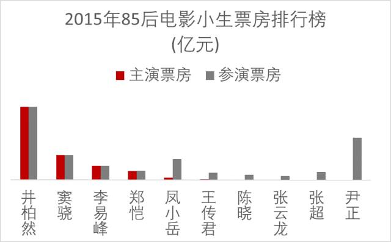
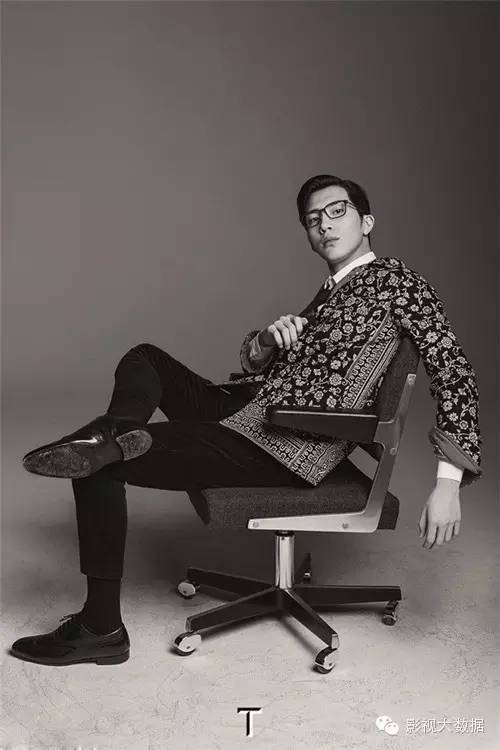
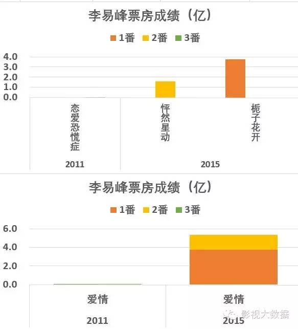
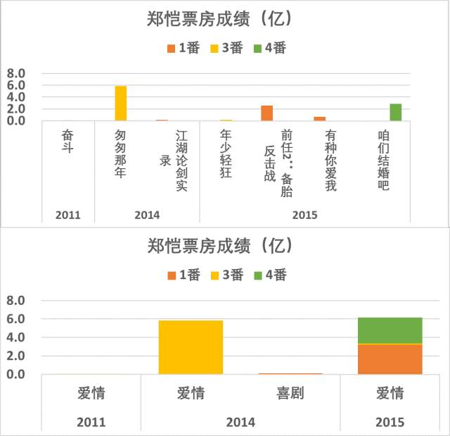
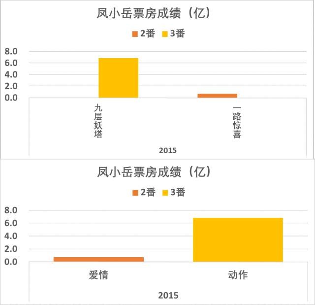
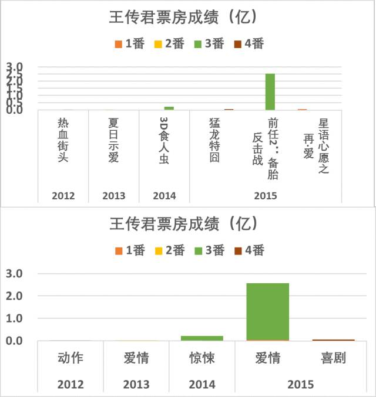
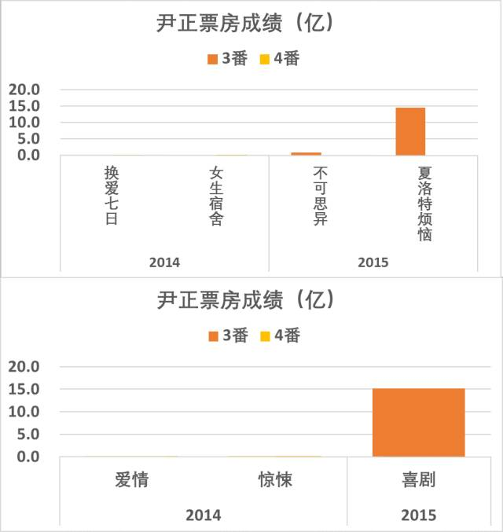
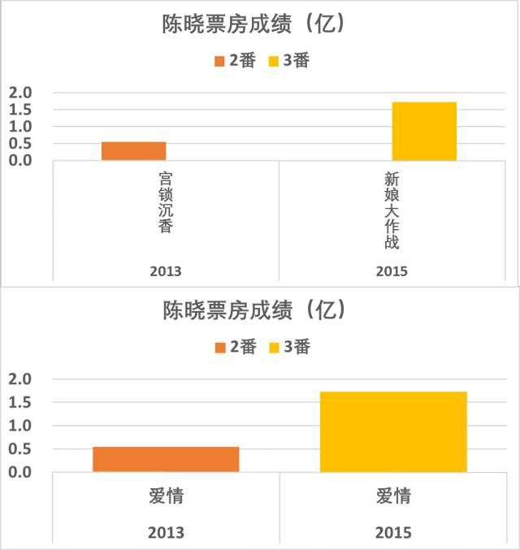
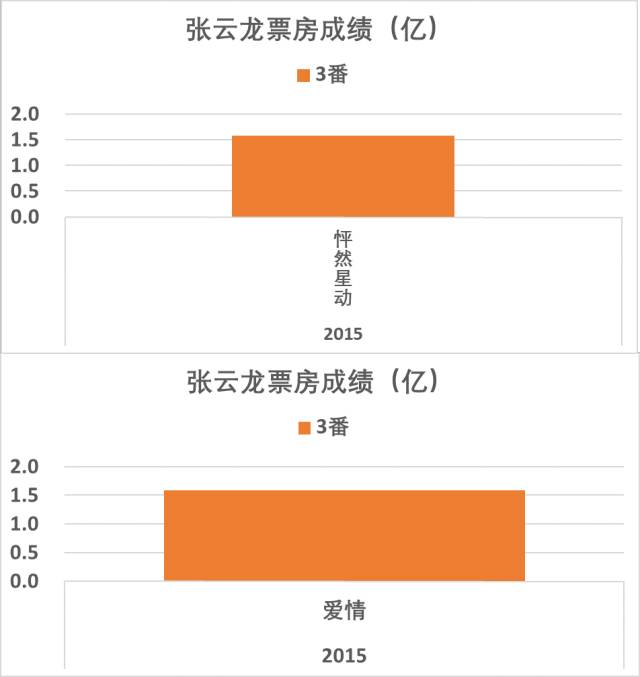
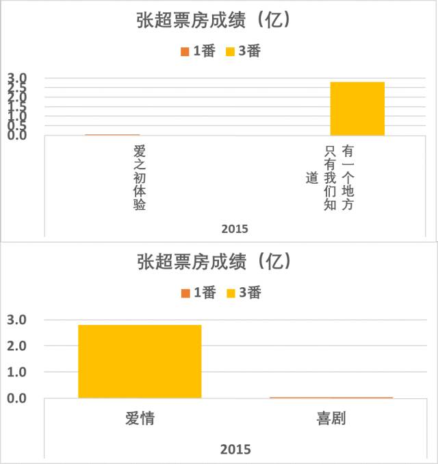

[数据详解]2015年85后小生电影市场表现分析
其实85后小生要说票房能力还早了点，即使是“24亿帝”井柏然，也不敢说他就有24亿的票房能力，换上其他小鲜肉，这票房会有多大变化，也不好说。这个年龄段的艺人，摊到一个大火的戏，也只能说导演好、题材好和宣发好，还真不敢说是小生的担票房能力强。不过电影演得多，题材分布合理，后续又有一些不错题材加持的，后面看好。
2015年电影市场发展很快，85后小生也从电影市场的边缘角色渐渐进入主力视线，不管他们是不是有担票房的能力，市场确实更加倾向于用“小鲜肉”来吸引女性为主的电影观众。预计未来几年，85后和90后小生将逐渐成为票房的强大力量。

盘点85后小生的票房能力其实是个很纠结的事儿，因为有主演电影而且票房还过得去的人并不多，起码是凑不够10个，所以把参演电影也算了进去一并盘点。这也是85后正处于成长期，尚未占据市场主力的事实。
所以有主演的做了排序，只有参演的，那就是参演电影的影响力+本人的印象分了，谈不上排序。
井柏然、窦骁的票房确实不错，已经纳入了2015年电影小生TOP10的整体盘点，这里不再重复。参见我的另一篇文章。

整体而言，井柏然手里有《捉妖记》系列剧，又有《盗墓笔记》电影版加持，后续商业票房价值一片看好，这位打拼多年之后，算是前途光明，路线稳定了。对井柏然和窦骁的分析，参见本微信号的前期文章。
窦骁的情况要纠结一些，虽然逮到了一部票房不错的《狼图腾》，票房算给冯绍峰和狼都好过算给窦骁，其他几部戏都有扑街之嫌，新步步惊心尤其扑得惨烈。之前窦骁是资源投放大户，后面是否还有这么多电影找他不好讲，后势还需要观望。
李易峰在古剑奇谭大火之后，今年在电影市场开始表现，主演两部电影累积5亿多，票房还不错，但怦然星动掉了些口碑。这和李易峰在电视剧市场的表现有相似之处，人气继续高位运行，但受接戏题材限制，《盗墓笔记》和《活色生香》都有雷剧之评，还好观众只说剧雷，对李易峰的演出还是基本肯定的，也算是个宽慰。《老炮儿》的好口碑尤其弥补了之前的雷剧影响。但李易峰以后的题材需要突破，以便应对更多雄心勃勃、规划周全的竞争者们。 （备注：因老炮儿还在上映中，票房成绩暂未统计进入）。

郑恺在华谊投了不少电影之后，终于开始有些起色了。今年的表现还可以，今年的勤奋度也够可以的，4部电影上映。虽然没有特别逆天的大热神作，一步步慢慢做起来了。照这个节奏，郑恺短期是不会糊，有希望慢慢走强。

别问我凤小岳是谁，其实在做这个统计之前，我都不知道他是谁。然而因为他演了个九层妖塔的三番，票房实绩也算是有了。再看一下其实这位演的戏还真不少了，且不说当年的《艋胛》，在大陆上映的还有《小时代》、《九层妖塔》、《一路惊喜》，以及《消失的凶手》，各种做配也算是配出花儿了，台湾捧艺人还是一整套的，几部大热戏跟着刷刷脸，只要不是太违和，慢慢就把群众们刷脸刷习惯了呢？赵又廷当初就是这么搞起来的。也许明年大伙儿还真记得他是谁呢？虽然我有点为大陆艺人不服，还是记下这位仁兄吧。万能的百度告诉我，他曾经是个模特，然而现在必须算个演员了。

我对王传君的印象还停留在好男儿时期，那时候他还算蛮帅哥的，后面就不知道在干啥了。然而统计这几年的票房成绩，必须真情实感地说，其实王传君还
是演了不少电影的，今年尤其勤奋。虽然票房都不太好或者一般般，从几年不间断的电影参与，到逐渐走高的票房，说明王传君的资源在逐渐好起来。当年的好男儿，其实基本上都不会演戏，然而几年下来，我们冷不防发现，不少有票房的艺人还就是出自这个看脸的选秀节目。井柏然能24亿，李易峰能大红大紫，谁知道马天宇、王传君们哪一天不会爆红一把呢？反正大家都不会演戏，都长得帅，那也就看运气了。

在《夏洛特烦恼》之前，可能大家都和我一样不知道尹正是谁。话说，我百度他照片，有几张冷不防以为看到了吴彦祖，小伙子这脸有前途。
伴随着神剧东风，尹正横空出世。其实这位2014年以来也拍了几部戏了，如今接着夏洛特的大火，观众对尹正本人也颇有好评，票房实绩不说，难得跟着大热电影混了个脸熟，也许尹正明年开始真的会常态化进入大众视野。

陈晓在电影市场其实算是个新军，一共就2部电影。当然他在电视市场也是个新军，至今只有两部主演戏陆贞传奇和神雕侠侣上线，于正官司之后陈晓压戏严重。说起来他算资源不太好，票房一般般，小日子有点艰难的那一类。当然，陈晓有脸，还有点演技，演感情激烈的戏尤其有种作天作地的猛劲儿，那叫一个狗血翻天。作为一个有特质有个性的艺人，也许他哪天时来运转又好了呢？2016年陈晓新作上线还是不少的，愿他好运吧。

别问我张云龙是谁，我真情实感说，我也不知道。但85后小生有点票房实绩的真心不多，张云龙在怦然星动里面演了个三番，也算是有成绩了。所以盘点算他一号。在一个票房凑合1.5亿多，口碑不太好的电影里面演了个男二号，到底算不算好资源呢？我认为对张云龙算，毕竟是个起步台阶。这个年龄的艺人，太需要机会。不给点阳光，谁来灿烂？

张超，又一个当年的好男儿，真应该给东方卫视颁发一个电影事业卓越贡献奖！话说张超那时候可是人间暴帅，华丽丽惊艳了时光冰封了岁月blabla花痴爆发省略一百字。现在……跟着90后小鲜肉吴亦凡混了个三番，好歹也是演到一部有票房的电影了。个人看法，他实在个子高了点，作为艺人反而有点限制。还是那句话，有点机会总是好过一直沉寂，希望大帅哥好运吧。

照例，TOP10之外，其实还有强人，只不过2015年刚好没重量级作品上，或者干脆没戏上映而已。2016年好汉们又杀回来了。
林更新和井柏然，必须并列最有竞争力的85后电影小生，或者再直白一点，最有竞争力的85后小生，因为他票房目前还没失手记录，这一点比井柏然强，选片眼光也不错，外型风格很能适应电影。从可持续发展力来看，一个能清醒规划自我、严格执行的男艺人，杀伤力是很可怕的。看起来林更新的团队不如井柏然，但做人做到他这么机灵，他自己就是团队。
林更新今年一年没在大银幕露面，对人气影响比较大。正值井柏然捉妖记大爆，90后小鲜肉群体性崛起，对林更新的资源配置能力形成了一定压力。本来据说2016年要用电视剧武神赵子龙刷脸，这样有利于弥补他的人气短板。但芒果台用天天有喜换下了武神赵子龙，给林更新的近期人气蒙上一层不确定因素。好在有2016年的一系列电影加持，再加上林更新的眼光和自我运营能力确实非同小可，颜和演技也过得去，一步步走稳，他的近期前途算是相对比较靠谱的。
有趣的是，近期比较前途靠谱的小鲜肉，多数有系列电影加持，例如井柏然的《捉妖记》和《盗墓笔记》系列，林更新可能的《狄仁杰》系列和可能的《西游》系列。在小生票房能力还不稳定的情况下，依托相对票房清晰的系列电影，对小生中短期走势企稳和走向大众化是很有价值的。然而，系列电影也有可能造成小生演技和圈层的相对固化，这也为长线发展增加了一丝变数。

作为香港电影在内地硕果仅存有票房能力的小鲜肉，李治廷前几年跟着大制作、大导、大牌很是刷了一下脸，可惜去年年底的电视剧武媚娘传奇没招好感，今年电影新作也没担当起来。可见港台小鲜肉要独立承担内地票房的男一号，其实还是有很大问题，演绎方式、文化差异，都是现实存在的障碍。
尽管如此，必须不能小看李治廷，他只要摆正位置继续跟着大制作刷脸，总有cos赵又廷成功的机会。试想，寻龙诀那个凤小岳的角色换了李治廷，又有什么不对劲呢？反正大家都刷脸而已，李治廷好歹还不是模特是演员对吧？
话说，本来我还查了一下陈伟霆这几年的电影，感觉是他人气不错，难得香港有青年艺人红到内地。但看了票房记录之后，我发现他前期的电影之路还是比较纠结的，且看2016年的表现吧。
短期的票房表现仍不足以概况85后小生们的持久力，这必须是一项成长性很强的持久战。
在各位心目中，谁是你最看好的85后电影小生？我们投票说话。